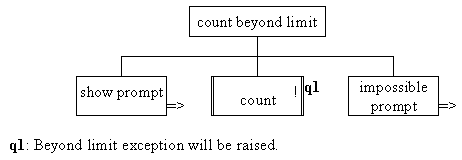

The design of the count beyond limit
part of the WarningCounterDemonstration class indicates
the possibility of an exception being throw, using an exclamation
mark, as follows.

As the exception will be thrown when count() is
called flow of control should never reach the impossible prompt
component. The implementation of this part of the client is as
follows.
0035 System.out.println( "\nCounting another occurrence with count()"); 0036 System.out.println( " This should throw an exception ... "); 0037 demoCounter.count(); 0038 System.out.print( "This message should never appear!");
The output of the entire demonstration client should be as
follows.
Warning Counter demonstration
The counter has been created with a range of
10 to 12 and an initial value of 10.
Demonstrating numberCountedIs()
The value should be 10 ... 10.
Counting two occurrences with count()
Its value should now be 12 ... 12.
Counting another occurrence with count()
This should throw an exception ...
Counters.CounterException: Attempt to count beyond limit.
at Counters.WarningCounter.count(WarningCounter.java:27)
at WarningDemonstration.main(WarningDemonstration.java:31)